すぐに慣れる子もいれば、少し離れたところからこちらを見ていたい子もいます。
心地よい距離も、近づくまでに必要な時間も、犬によって違います。
だから、まずは急がないこと。その子の歩幅を知ることから、私の仕事は始まります。
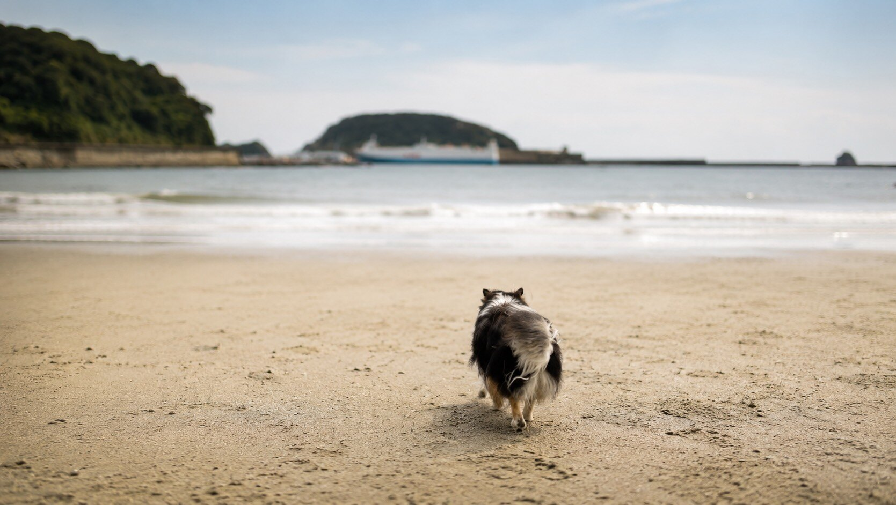
SATOKO KUMAMOTO DOG SALON STEP
01PACE
すぐに慣れる子もいれば、少し離れたところからこちらを見ていたい子もいます。
心地よい距離も、近づくまでに必要な時間も、犬によって違います。
だから、まずは急がないこと。その子の歩幅を知ることから、私の仕事は始まります。
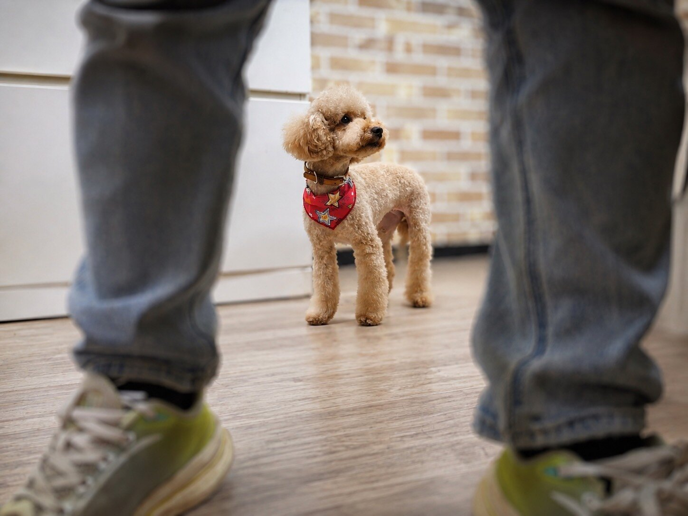
02FIRST CONTACT
私も、初対面では緊張します。
怖がっているときに、無理に目を合わせたり、何度も触れたりはしません。
少し距離を取りながら、穏やかな声で話しかける。
ここにいる私は、怖い存在ではないのだと知ってもらえるまで待ちます。
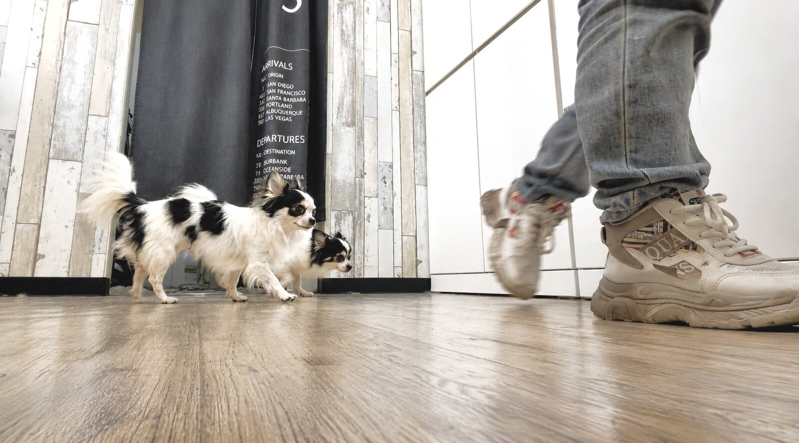
03TRUST
少しだけ、私に興味を持ってくれたのだと思う。
ふと、私の手や顔に近づいて、匂いを嗅いでくれることがあります。
ほんの小さな動きです。でも、その瞬間に、少しだけ私へ興味を持ってくれたのだと感じます。
大丈夫になることを、急がない。近づくかどうかは、その子自身が決めることだから。
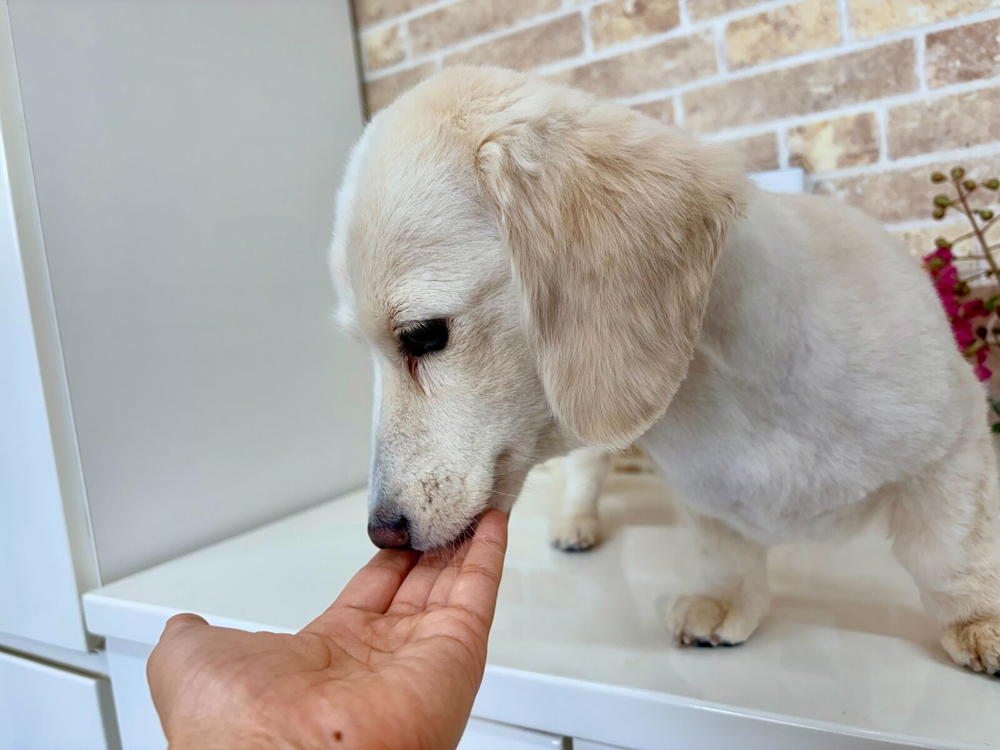
04NOTICE
施術をしていると、普段は見えにくい小さな変化に気づくことがあります。
皮膚や身体の様子。触れたときの反応。その日の過ごし方。気づいたことは、どんなに小さなことでも飼い主さんへ伝えます。
きれいに仕上げることだけが、私の仕事ではありません。その子が今日どのように過ごしていたのかを、きちんとお返しするところまでが私の仕事だと思っています。
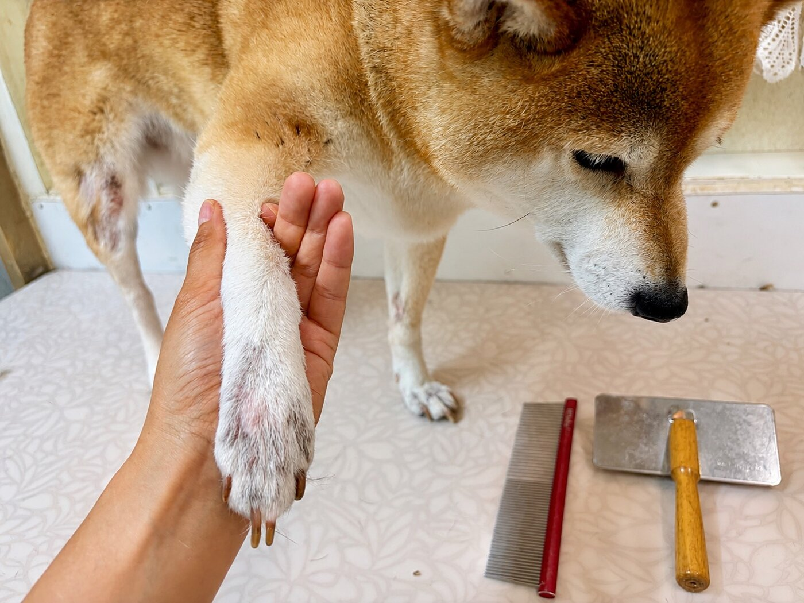
05EXPLAIN
飼い主さんの希望にそのまま応えることが、犬にとって一番よいとは限りません。
そのように感じたときは、理由をきちんと説明します。疑問や不安を残したまま、犬を預けてほしくないからです。
お話を聞き、考えを伝え、一緒に納得できる方法を探す。それも、犬を大切にするために必要な時間です。
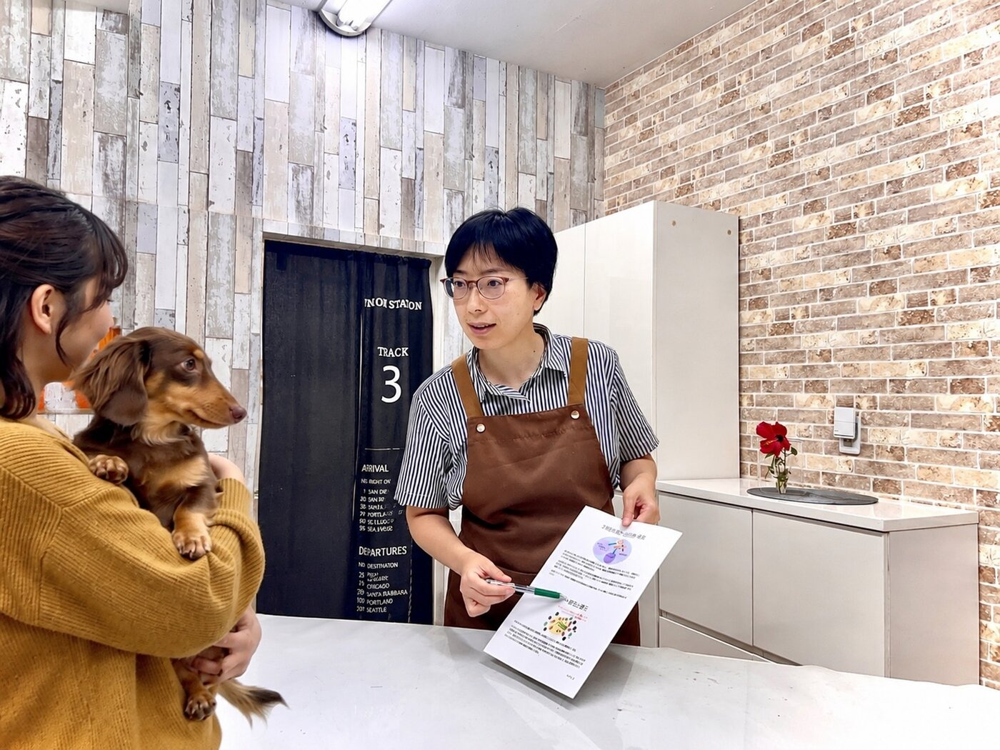
06THINK
調べる。相談する。もう一度、考え直す。
迷ったときは、自分の考えだけで決めないようにしています。自分の知識や経験に凝り固まっていないかを確かめる。
犬のためにできることは、一つの答えで終わるものではありません。よりよい方法があるのなら、これまでのやり方を変えることも必要だと思っています。
考えることを、止めない。それが、私なりの責任の持ち方です。
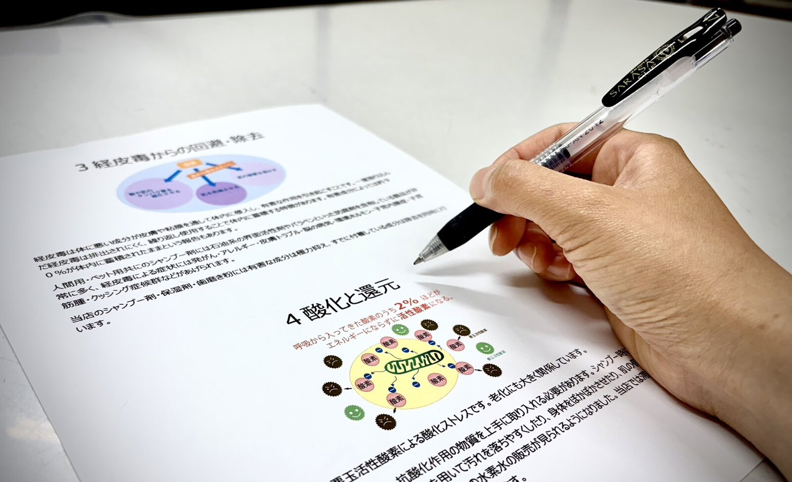
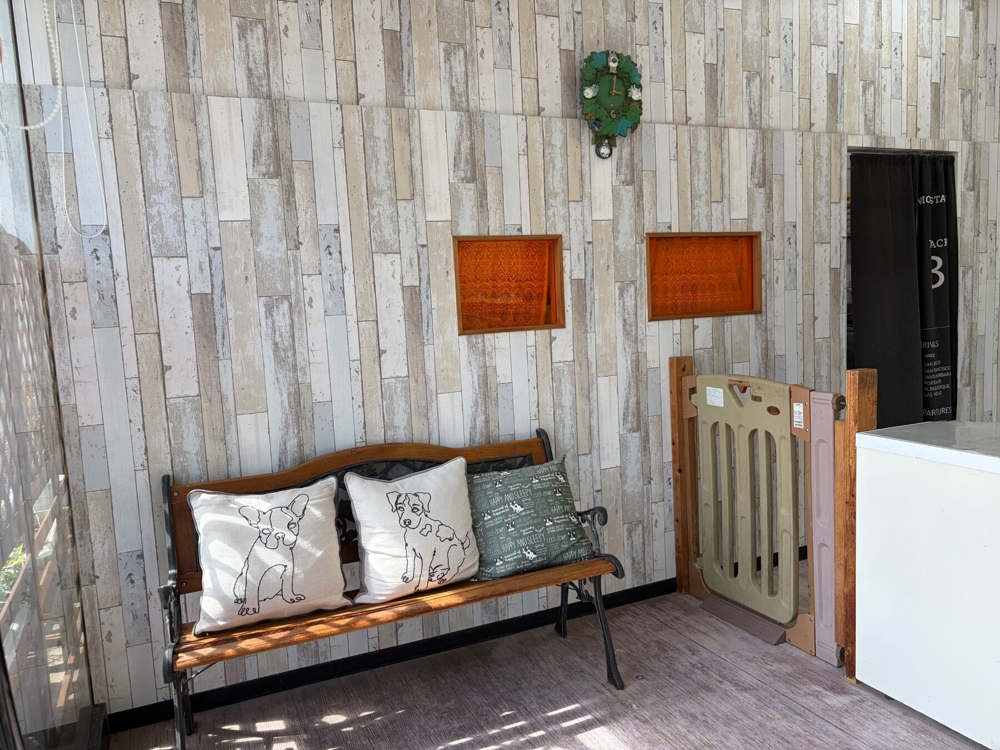
07JOURNEY
STEPを始めた頃は、自分のペースで、自分らしい仕事ができたらと考えていました。
少しずつお客様が増え、やがて予約が数か月先まで埋まるようになりました。信頼していただけることへの喜びと、任せていただく責任の重さ。その両方を、以前より強く感じています。
STEPは、私が完成した場所ではありません。今も私を育て、前へ進ませてくれる場所です。
08FUTURE
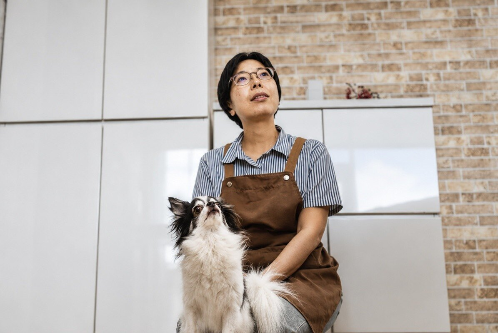
今日、きれいになったこと。それだけではなく、その子がこれからどのような日々を過ごしていくのかを考えたい。
飼い主さんと一緒に、愛犬の3年先を見つめる。未来を決めつけるのではなく、今できることを一つずつ見つける。
今日のケアが、その先の日常につながるように。これからも、犬と飼い主さんの歩幅に合わせて一緒に考えていきます。
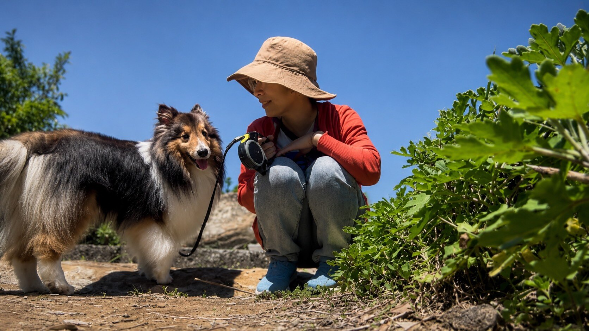
急いで近づかない。
小さな変化を、見逃さない。
分からないことを、
そのままにしない。
今日だけでなく、
その先の日常まで考える。
それが、
隈本聡子のSTEPです。
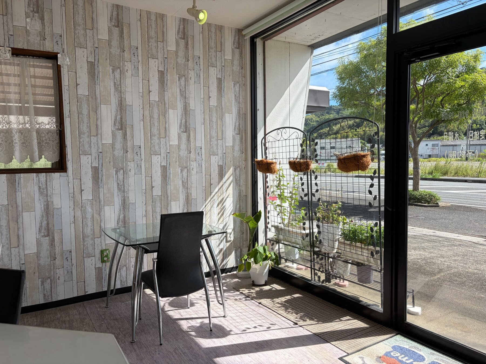
09CONTACT
初めての場所が苦手なこと。お手入れを嫌がること。少し気になっている変化。うまく説明できなくても大丈夫です。まずは、今気になっていることを聞かせてください。
スマートフォンで読み取ると、
公式LINEが開きます。